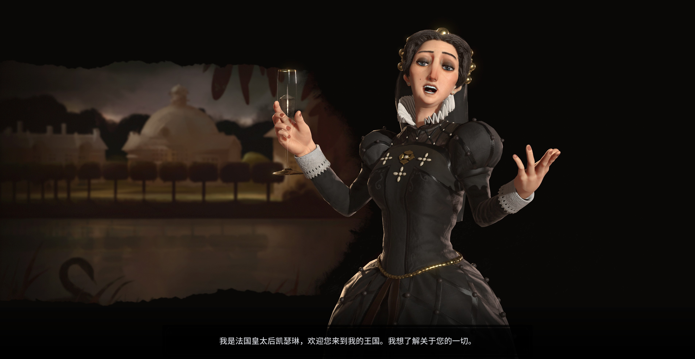

法国

领袖：凯瑟琳·德·美第奇（Catherine de Medici）
领袖倾向：黑皇后（Black Queen）
尽可能招募间谍并收集外交信息。喜欢放纵法国间谍活动的文明，敌视阻挠法国间谍活动的文明。
领袖奖励：凯瑟琳亲卫队（Catherine's Flying Squadron）
对其他文明的外交情报等级提高一级。
研究中古时代科技项目「城堡」后即可解锁间谍的训练，并获得一个间谍名额。
特色单位：近卫军（Garde Impériale）
工业时代近战单位，由科技项目「军事科学」解锁。战斗力高，且在首都所处大洲作战时战斗力增加10。消灭敌方单位时产出10陆军统帅点数。
特殊设施：【改良设施】庄园（Chateau）
由文艺复兴时代人文项目「人文主义」解锁。产出1文化。邻近奇观时额外产出2文化，邻近奢侈资源时产出1金钱。只能紧邻河流修建。
特殊能力：大环游（Grand Tour）
建设中古时代、文艺复兴时代和工业时代奇观时产能增加20%。
所有奇观的观光产出增倍。